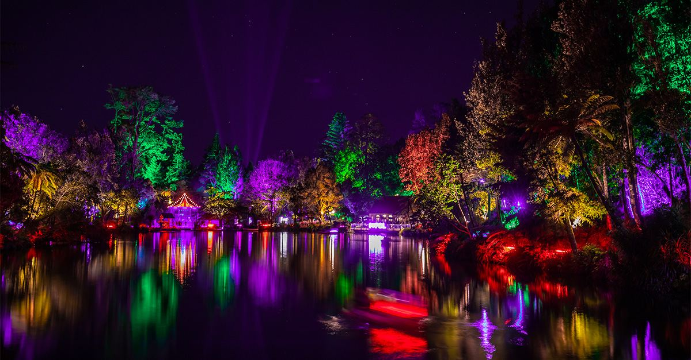

Festivals · Culture
TSB Festival of Lights 2026-27
- Dates
- –
- Venue
- Pukekura Park
- Location
- New Plymouth, New Zealand
- Format
- In-person
- Category
- Culture
- Industry
- Culture
- Official website
- https://www.festivaloflights.nz/
About
Dates are local New Zealand dates (NZST/NZDT).
Topics: light installations, summer festival, free events.
No organiser attendance figure found on official pages (24 Nov 2026). Ranked by an estimated size tier 'large' (our judgement from format, venue and scale, not an official number).
Sources
- Official — https://www.festivaloflights.nz/